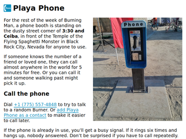
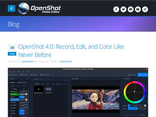

"In a similar vein, Taylor Otwell from Laravel writes his comment blocks exactly three lines long and each line is three characters shorter than the line above, e.g. /* |-------------------------------------------------------------------------- | Application Name |-------------------------------------------------------------------------- | | This value is the name of your application, which will be used when the | framework needs to place the application's name in a notification or | other UI elements where an application name needs to be displayed. | */ https://github.com/laravel/framework/blob/13.x/config/app.ph..."
"There's a similar anecdote Gillian Anderson recently revealed during an interview on the X-Files, saying Chris Carter had an OCD-like habit to write dialog to conform to certain text layout preferences (no widows[1]) in the script, which made for the show's distinctive style of dialog cadence.1 = https://en.wikipedia.org/wiki/Widows_and_orphans"
"In programming certain word choices are valuable in this way. It's sad that pairs like true/false, good/bad, first/rest, and left/right are unequal length. But there are nice pairs like old/new, head/tail, fast/slow, same/diff, and right/wrong, which can help with create natural vertical alignment throughout a function."
"Ad blocking has become a safety issue. My parents are at an age where they fall for things. If a malicious ad pops up and offers to install McAfee, some other form of crapware, or outright scamware, they'll click that ad and install the thing. Then I'll get called over when the computer starts acting screwy. If Google, MS, etc. had ever gotten together and developed a way to filter malicious ads out of their own ad services, maybe we wouldn't be having this conversation. They didn't do that and probably never will.If my parents get a new machine, the first thing I do is uninstall or, at least, delete the icons for Edge, Chrome, etc.. On goes Firefox, uBlock Origin, and a couple other extensions. They don't care what browser they use. They can't even name it. I just try to make sure they use a browser that isn't horribly unsafe.We should all do this for people we care about. Don't ask them what browser they prefer. Odds are they don't know or care. Don't try to convince them to install Firefox themselves. They won't. Just do it for them. Think of it like picking up a rusty nail that's on their lawn. Sooner or later they're going to step on that thing if you don't."
"I know Firefox's share of browser share has dwindled to almost nothing. I know sooner or later, well within my lifetime, it will be gone.But I will keep using it until they pry it from my hands. And if they do, I'll use forks until those break down too. I can't stand Google, or what Chrome has become. No single company should have such unilateral control over the internet and its information."
"I remember in 2010 when Chrome made the web so much better for everyone. All the early adopters were singing its praise and encouraging friends and family to use it.Now, I encourage people to use anything but Chrome. Firefox is really great these days."

"This phone is my project. I'm happy to answer questions."
"Our first time out on the playa together, my girlfriend and I stopped by this phone booth and made a couple of calls. And because we stopped, we saw the FSM camp next door, and a giant sign saying "Weddings Here", so we inquired. They offered us free rings and then announced our wedding over a loudspeaker. In 2 minutes we had an entire wedding party, complete with best man, an elder to give away the bride, 25+ guests, and an officiant. My newly-minted best man even gave me one of my favorite playa gifts ever as a wedding gift. We opted not to "make it official", though they offered. It was a truly incredible experience. Thanks FSM!"
"This is a great project! I've been to Burning Man 10x and interactive projects are my favorite part.Also, if I may, for folks that might appreciate more phone-based spontaneity, I've built an app to revive the social phone call. It works like a bat signal. Light your beacon and it reaches all your friends at once. The first friend to answer connects 1-1 and every other signal quietly drops. Check it out at trybeacon.chat"

"I've supported OpenShot financially in the past, but I'm currently leaning towards LosslessCut and Shortcut.Most people want a video editor to splice and concatenate video files without any loss or transcoding. I believe this behavior (lossless) should be default on all of these editors."
"There is also Blick which launched recently which claims to be very very fast https://blickeditor.com/?lang=en and part of recent wave of fast software (Task Slinger, File Pilot)"
"Nice, looks like a great release. UI looks like it got a nice touch up and also cool to see that the project has AI powered object masking using onnx models: https://github.com/OpenShot/openshot-onnx."
"I think people shouldn't just jump to distros which are getting heavily hyped in media/Youtube, cachyOS had similar wave, and now Omarchy does.(example: NetworkChuck, Primeagen? and a few others)also, archlinux is much easier to install nowadays with archinstall [1], so i'm not sure you really need another opinionated layer on top of it[1] - https://wiki.archlinux.org/title/Archinstall"
"Linux isn't like macOS, it doesn't have any kind of proper desktop sandboxing architecture that really works. So this is kind of security theatre. If you run a malicious program it can do stuff like tamper with your PATH or exploit local vulns in apps to get to the point where it can control anything that matters (which root generally doesn't). For instance it can just drop a custom shell into ~/.bin/.hidden-shell and reconfigure the terminal emulator to run it.So this kind of "vulnerability" doesn't seem that important. If you run code as yourself on Linux it owns you.On macOS it's very different. Pervasive code signing gives all apps a stable identity enforced by the kernel that they can't easily escape. The kernel can then impose sandboxing policies on any app that's run regardless of how it's installed, for instance, preventing apps from rummaging through ~/Documents or monitoring your screen. Permissions are editable and guaranteed to stick, including across upgrades. And root is disempowered so obtaining it barely matters, it's only really there for UNIX compatibility.Unfortunately implementing an Apple style architecture on Linux would be very difficult."
"A few days ago someone found they were flowing USB descriptors straight into the shell.https://github.com/omacom/omarchy/commit/9285b19d6a72eba3df8...Don't use vibecoded distros. It doesn't matter whether they fix this or that, or whether you care about a particular vuln. This is not sensible. It's why you switched away from Windows in the first place, remember?"
"I did exactly this with BirdNet-Go and my Unifi doorbell cam. Unifi exposes an RTSP feed for each camera so it was easy for the tool to just "listen" to the doorbell and start classifying.I have a spare e-ink display and my next weekend project to follow onto this is to wire it up so it shows some faux "woodcut" images of birds detected, or something like that."
"Btw, Merlin Bird ID app by Cornell University is so good that I got some people interested that weren't into that topic at all."
"I tried that with my Aqara camera. The mic there has no windshield, though; wind noise was terrible. Also I couldn’t get Aqara support to enable higher sampling rates in the firmware than 16kHz; BirdNET expects 48kHz audio samples.Ended up installing a better microphone attached to a RPi3A+ and using a RaspberyPi 4 which I already owned for hosting BirdNET-Go https://maciejb.me/posts/birdnet-go-setup/Much better sound quality now!"
"The European Commission has far too much power, and answers far too little to the populace. In reality, they want to be dictators.If you don't know, the unfortunate way thf EU is structured, the Parliament cannot initiate legislation. They can only vote on whatever the Commission puts in front of them.If the Parliament votes "wrong", the Commission just repackages the idea in a new bill, pulls a couple of dirty tricks, and tried again. They only have to succeed once. See ChatControl for a prime example.So the EU will eventually require backdoors in encryption. It's only a question of how many tries it takes..."
"And, of course, no thought is given to the implications this could have in conjunction with the next Orban. Europe is aligning against Russia as a threat, while at the same time shooting itself in the foot by disabling basic rights like privacy with absolutely no memory of how much more basic lack of privacy (enabled by Facebook) was leveraged with relatively simple tools (https://en.wikipedia.org/wiki/Facebook–Cambridge_Analytica_d...) to help Brexit happen (effectively breaking Europe apart).This quote from Apocalypto stuck with me "A great civilization is not conquered from without until it has destroyed itself from within.""
"With all the current concerns about rogue and mis-aligned AI, and about how we've made essentially zero progress on making sure that AI is safe and trustworthy, NOW you want to put backdoors in encryption algorithms? We should be doing everything we possibly can to make our systems more secure, not less.This type of policy was terrible when they first thought of it. Now it's outright negligent and dangerous."
"I've heard it said that true understanding is demonstrated when someone can explain difficult concepts well. Tao manages to convey complex ideas without making me feel like he is condescending to me. His depth of understanding is unmistakable.My changes to his list would be s/Geometry/Topology/ and I might have found a place for logic and type theory. I am especially glad he brought to mind Dynamics since that is a field I know I need to pay more attention to.Great video, we're lucky to have this kind of content so easily and widely available."
"I respected Terence Tao but since listening to his "Mathematics in the age of AI" talk, I've become a fan. I have had nobody else explain so succinctly what is the purpose of Mathematical research, why it matters, and why it is so important to preserve the ways we do math. Even more importantly, I feel it resonates so well with every other field AI is taking over."
"NumbersAlgebraGeometryProbabilityAnalysisDynamicsI loved this talk, but these concepts are like an attempt at dimensional reduction of math research, science, the academics knowledge.I would have loved to have his thoughts on the mathematical mind, the process, how to reason, infer vs deduct, abstract, prove..I don’t really know, what are the primitives, essential concepts of math reasoning?"
"I'm convinced that this is just guerilla marketing from Apple. When this started spreading a day or two ago, it was all from no-name spam media sites that are paid to publish articles. They all claimed "a source" is where they got the intel, without specifying the source. It was spreading like wildfire on socials.The same thing happened with Mac Mini's and OpenClaw. Nobody cared about or was using Mac Mini's for OpenClaw, but there were all of these very suspicious posts from accounts that were clearly Apple marketing bots (you could tell by looking at their post history, where they would drop "Mac Mini" into every conversation they could across all different subreddits and unrelated topics). Then it became fairly common.So Apple's marketing department is seemingly using the same strategy again. Because still, it's impossible to find a reputable source for this claim."
"Apple was also allegedly "caught off guard" by the Macbook Neo demand.I don't really see how they couldn't see the Local AI demand or demand for a cheaper Macbooks. This just reads like marketing imo."
"There is a lot of "AI demand" that isn't just running inference on an LLM whose weights you downloaded.I'm training a model using reinforcement learning with self-play. I can and do use vast.ai when scaling but for experiments it's far faster, and cheaper, to run it locally until the bugs are all figured out. Just provisioning a new instance and copying the relevant checkpoints and things can take 25 minutes. It's zero locally."
"I realise I’m pissing into the wind here, but I find the LLM text on the homepage and docs quite funny/ awkward.> “Ctrl+M turns it into a tiny player that wears any classic Winamp 2 skin, spectrum analyser, equalizer, and playlist included. 2000s vibes, pixel for pixel.”Everything is said with too much intensity, and phrasing that sounds impressive but doesn’t really mean that much. Like “wears any classic Winamp 2 skin” feels so awkward, what’s “wears”? You mean it can use it?I feel like if you can’t be bothered to write the code, at least document it yourself and write the marketing copy so I know you understand the product. Otherwise how can I trust running it on my computer? Did the LLM generate some amazing rm -rf somewhere, or another blunder that wrecks data I might care about?"
"Spotify is in the process of killing the librespot project that this and most third party Spotify players are built on. I think the golden age of music streaming is coming to an end. I’ve migrated to a self hosted library with streaming and radio for discovery. I hope we’ll see many projects in the space flourish. Many, like Navidrome and the whole OpenSubsonic ecosystem, seem to be doing quite well."
"If anyone is interested in selfhosting or wants to stop using spotify without losing the discoverabily:I use explo+slsk+lidarr+navidrome, for access on my phone I use dsub2000 or symfonium but mainly dsub2000.Explo is the software used for the discovery https://github.com/LumePart/Explo It automatically downloads daily jams, weekly jams and weekly exploration playlists from your listenbrainz account(free) using youtube, soulseek(with slskd) or lidarr (support was merged very recently).I also imported all my artists from my spotify account when I migrated which you can do in lidarr with the plugin ̶a̶n̶d̶ ̶t̶h̶e̶ ̶f̶o̶r̶k̶ ̶ bellow ̶b̶e̶c̶a̶u̶s̶e̶ ̶i̶t̶ ̶i̶s̶n̶'̶t̶ ̶s̶u̶p̶p̶o̶r̶t̶e̶d̶ ̶i̶n̶ ̶t̶h̶e̶ ̶m̶a̶i̶n̶ ̶l̶i̶d̶a̶r̶r̶.̶plugin: https://github.com/TypNull/Tubifarry̶f̶o̶r̶k̶ ̶d̶o̶c̶k̶e̶r̶ ̶i̶m̶a̶g̶e̶:̶ ̶g̶h̶c̶r̶.̶i̶o̶/̶l̶i̶n̶u̶x̶s̶e̶r̶v̶e̶r̶-̶l̶a̶b̶s̶/̶p̶r̶a̶r̶r̶:̶l̶i̶d̶a̶r̶r̶-̶p̶l̶u̶g̶i̶n̶s̶docker image: lscr.io/linuxserver/lidarr:nightlyThis plugin is also needed for downloading songs with slsk in lidarr."
![Preview of 'Terence Tao explains 6 essential mathematical concepts [video]'](default_49503521.png)
“I just chose words carefully”
"In a similar vein, Taylor Otwell from Laravel writes his comment blocks exactly three lines long and each line is three characters shorter than the line above, e.g. /* |-------------------------------------------------------------------------- | Application Name |-------------------------------------------------------------------------- | | This value is the name of your application, which will be used when the | framework needs to place the application's name in a notification or | other UI elements where an application name needs to be displayed. | */ https://github.com/laravel/framework/blob/13.x/config/app.ph..."
"There's a similar anecdote Gillian Anderson recently revealed during an interview on the X-Files, saying Chris Carter had an OCD-like habit to write dialog to conform to certain text layout preferences (no widows[1]) in the script, which made for the show's distinctive style of dialog cadence.1 = https://en.wikipedia.org/wiki/Widows_and_orphans"
"In programming certain word choices are valuable in this way. It's sad that pairs like true/false, good/bad, first/rest, and left/right are unequal length. But there are nice pairs like old/new, head/tail, fast/slow, same/diff, and right/wrong, which can help with create natural vertical alignment throughout a function."